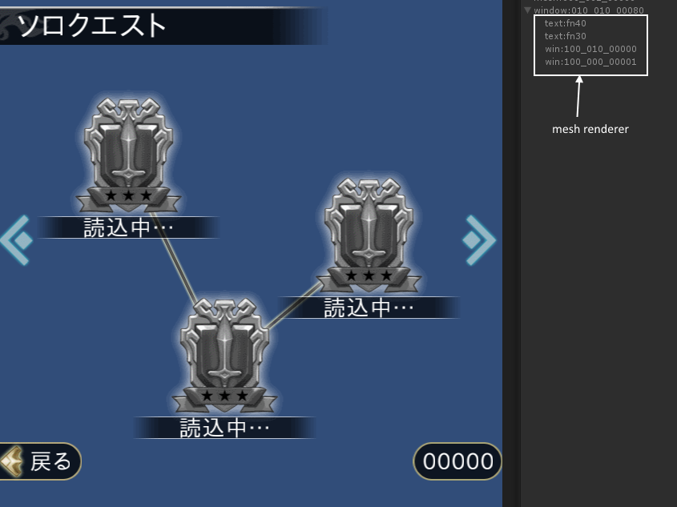

The control priority¶
A window is rendered using a mesh .
A mesh is generated in corresponding to one texture.
Thus, the draw call does not increase even if the number of window control increase.
However , there is a need to be careful about the priority between the control .
Priority between the control to be rendered in a single draw call can be flexibly changed .
On the other hand , priority between different texture ( = different mesh ) is dependent on the priority between the texture priority
First , it is sorted by the textures , it is then sorted in the control priority within the same texture .
For example, the following window is composed by four meshes (textures ) .
This window is constructed from two font meshes and two texture meshes.
fn40
fn30
100_000_00001
100_010_00000
If the same texture ID is specified¶
If the priority is the same¶
If the priority is the same , it is automatically sorted according to the type of controls .
The control which list order is high is rendered to the front.
SCROLLBAR
LISTBOX
LISTBOXEX
CONTAINER
TEXT
RICHTEXT
LOG
LOGTEXT
BUTTON
CHECKBOX
RADIO
HELPBUTTON
EDITBOX
TEXTBOX
METER
ICON
CARD
TEXTURE
RENDER
RENDERICON
RECASTICON
LINE
LABEL
FRAME
BAR
If the texture ID is different¶
If the texture ID is different , The texture’s z offset is priority than the priority of the control.
It is possible to set the Z offset of texture by TEXTURE_ZOFFSET of window properties .
The mesh that has larger value is displayed at the back.
WINDOW(100_100_00010) { TEX_ID = DEFAULT_TEXTURE; STYLE = POPUP|NOFRAME|NOTITLEBAR; TEXTURE_ZOFFSET = 100_100_00000,-1; TEXTURE_ZOFFSET = 100_010_00000,1; POSITION = 0,0; SCREEN = 0,0,{100},{-BASEY}; SIZE = WIN_W,WIN_H; };In this example , Meshes are rendered in the following order.
100_100_00000 front
DEFAULT_TEXTURE
100_010_00000 back
Note
If not explicitly specify the Z offset,this window system assigns a value as this texture mesh is rendered in front of the existing meshes. This order is difficult to explicitly control because it is handled automatically by the system. If your window has three or more texture, you are better to set the TEXTURE_ZOFFSET.
Note
Meshes generated as render targets can be ordered with TEXTURE_ZOFFSET .See RENDER , RENDERICON .